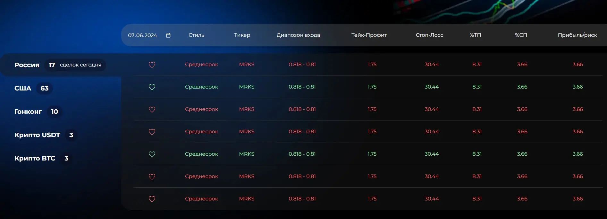

Эта простая и удобная таблица представляет собой аналитический срез результатов анализа финансовых активов, торгуемых на фондовых и криптовалютных биржах мира на выбранную дату. И дает возможность трейдерам и инвесторам значительно быстрее и удобнее находить потенциально выгодные торговые ситуации из списка в более чем 3000 торгуемых на биржах инструментах, что сделать в ручную практически не возможно. Тем самым трейдеры и инвесторы получают в свое распоряжение профессиональный инструмент анализа, благодаря которому получают возможность принимать самостоятельные торговые и инвестиционные решения из более широкого списка наблюдаемых активов.
-
ТЕОРИЯ
ДАТА — по умолчанию данные в таблице отображаются на текущую дату, и вы также можете выбрать для анализу любой другой день, который вас интересует. (глубина отображаемой истории до 23.09.2023 г.)
РЫНКИ — все сделки на фондовых биржах сгруппированы по названию страны, в которых находятся биржи, если в выбранной стране несколько бирж, то все они будут отображаться в общем списке под названием этой страны. Также группы сделок сформированы для криптовалютных активов отдельно в паре к USDT и BTC.
СТИЛЬ — «Стиль — это всё» © Чарльз Буковски. Одна из важнейших колонок таблицы, которая кроме того, что будет отображать ориентировочное время достижение цены актива до основного тейк-профита (горизонт планирования), также будет формировать некоторые приоритеты, которые помогут вам принимать правильные решения — подробнее о которых будет описано ниже в разделе «Досрочное закрытие сделок». Кроме того вы сможете выбирать сделки исходя из стиля вашей торговли и инвестиций. Более подробно с тем, что такое стиль можно ознакомиться в статье по этой ссылке: https://telegra.ph/Stili-na-tradescannerru-10-02
ТИКЕР — сокращенное наименование финансового инструмента/актива (акции, пары валют, пары криптовалют, товара, облигации, гдр, етф и облигаций). Это уникальный буквенный или цифровой код, при помощи которого вы с легкостью найдете нужный актив в своем торговом терминале. При клике на название тикера, он автоматически копируется в буфер обмена вашего устройства, таким образом его легко будет вставить в советующее поле вашего торгового терминала или биржевого приложения.
НАПРАВЛЕНИЕ СДЕЛОК
Long — строчки сделок зеленого цвета. Идея торговой ситуации основывается на том, что цена данного актива вырастет в течение расчетного времени, т.е. сначала покупаем по низкой цене, а затем продаем актив по более высокой цене, оставляя себе прибыль в виде разницы.
Short — строчки сделок красного цвета. Идея торговой ситуации основывается на том, что цена актива уменьшится в течении расчетного времени, т.е. сначала продаем актив по более высокой цене, которого у нас нет на балансе (автоматически заимствуя его у брокера), а затем покупаем актив по более низкой цене (автоматически возвращая его брокеру), оставляя себе прибыль в виде разнице.
ДИАПАЗОН ВХОДА — цена или ценовая зона, наиболее благоприятна для открытия новой позиции. В случае если диапазон входа указывается в виде двух цен, то вы можете открывать сделку или только по первой цене (наименее выгодной), или только по второй цене (наиболее выгодной) если цена актива дойдет до указанного уровня, а также вы можете распределить сумму, которую вы выделяете на данную сделку, расставив два и более открывающих ордеров внутри указанного диапазона. При клике на цену, она автоматически копируется в буфер обмена вашего устройства, что позволяет легко вставить ее в соответствующее поле вашего торгового терминала или биржевого приложения.
ТЕЙК-ПРОФИТ — уровень цены актива, являющийся основной целью сделки, при достижении которого рекомендуется зафиксировать прибыль частично или полностью. В некоторых случаях указывается промежуточная цель (маленький шрифт), частичная фиксация прибыли в данной области позволит значительно сократить риски, но не является обязательной и остается на ваше усмотрение. Свои расчеты, статистику и анализ качества сделок мы ведем только по основной цели (большой шрифт).
Указанный уровень тейк-профита является рекомендуемым, при этом если вы считаете, что основная цель завышена или наоборот занижена, то вы можете закрывать сделку по своим расчетам. Будем признательны, если вы будете делиться с нами своим прогнозами в нашем телеграмм чате https://t.me/tradescanner_chat
СТОП-ЛОСС — уровень цены актива, при достижении которой, сделка перестает быть актуальной. Это самая важная колонка из всей таблицы. По указанному стоп-лоссу мы ведем статистику всех предоставляемых сделок, строим расчеты и проводим анализ их качества. Использовать всем трейдерам и инвесторам ОБЯЗАТЕЛЬНО!
Обязательно прочитайте раздел РИСК МЕНЕДЖМЕНТ — стоп-лосс и риск-менеджмент неразрывно связаны между собой.
%ТП — информационное поле, которое отражает потенциал изменения цены актива в % от наименее выгодной точки диапазона входа в сделку до основного тейк-профита.
%СЛ — информационное поле, которое отражает возможное изменение цены актива в % от наименее выгодной точки диапазона входа в сделку до рекомендуемого Стоп-лосса.
ПРИБЫЛЬ/РИСК — данный показатель отражает потенциал сделки с точки зрения отношения ее потенциальной прибыли к потенциальному убытку. Расчет ведется по наименее выгодной точки диапазона входа в сделку.
При помощи встроенного фильтра для колонок % ТП, % СЛ и ПРИБЫЛЬ/РИСК вы можете устанавливать минимальное и максимальное значение для отображения строчек в таблице.
-
ПРАКТИКА
И так, чтобы использовать сканер в полной мере, у вас уже должны быть открыты счета на биржах, на которых вы планируете вести свою торговую и инвестиционную деятельность, а также получен доступ к нашему сканеру в соответствии с выбранной подпиской.
С этого моменты на ежедневной основе, заранее, до открытия бирж, или с момента начала новой сессии у вас уже будут сформированы данные по сделкам на текущей день.
При этом вы можете использовать встроенный календарь перемещаясь на другие даты, что бы найти и выбрать еще не отработанные сделки, сформированные в предыдущие периоды (глубина истории 23.09.2023 г.).
Если же вас интересует анализ конкретного актива и актуальные по нему сделки, то, пожалуйста воспользуйтесь строчкой ПОИСК введя сокращенное наименование инструмента — ТИКЕР (формат для акций: SBER, TESLA; для криптовалют: BTCUSDT), вам будет доступен список ранее обнаруженных сделок начиная от 23.09.2023 г., а также текущих актуальных если такие имеются на данный момент.
Каждая строчка в таблице — это данные для одной сделки. По умолчанию строчки в таблице сортируются при колонке ПРИБЫЛЬ/РИСК от большего значения к меньшему. А также имеется возможность построение сортировки по колонке % ТП.
Из предложенного списка вам необходимо выбрать для начала одну сделку. Рекомендуем сразу же добавить ее в избранное, нажав на «сердечко». Далее вам необходимо кликнуть на тикер — он автоматически скопируется в буфер обмена вашего устройства. Затем вы переходите в ваш торговый терминал или биржевое приложение и вставляет тикер в соответствующе поле, если у вашего брокера имеется данный финансовый инструмент, то в приложении вы перейдете на страницу данного атива, где можно совершать с ним сделки.
Следующее, что вам необходимо сделать после того как вы выбрали сделку и убедились в наличии данного актива в вашем торговом терминале — это рассчитать сумму (объем) сделки в соответствии с вашим риск-менеджментом. Не смотря на то, что вы уже прочитали раздел риск-менеджмента и разобрались с его нюансами, мы напомним вам форму для этого расчета:
Объем сделки в % от депозита = % вашего риска / (% стопа * плечо) * 100
Таким образом вы получается сумму в % от вашего депозита, на которую вы будете открывать сделку.
Далее возвращаемся на платформу Tradescanner.ru и переходим в колонку ДИАПАЗОН ВХОДА. Вам необходимо принять решение как вы будет открывать сделку исходя из имеющейся в этой колонке информации. Так, например вы можете выставить открывающие ордера внутри указанного диапазона входа, или открыть сделку маркет ордером по текущей цене актива, убедившись что сделка все еще актуальна, т.е. или не значительно ушла от точки входа в сторону тейк-профита или не достигла стоп-лосса — в случае если вы ищите сделки, сформированные в предыдущие дни.
Указанные цены можно копировать одним кликом и вставлять их в соответствующие поля вашего торгового терминала или биржевого приложения.
Как только вы открыли сделку и/или установили открывающие ордера, сразу после этого необходимо установить СТОП-ЛОСС и ТЕЙК-ПРОФИТ. Если вы согласны с указанными нами уровнями — просто скопируйте их аналогично по клику и вставьте в советующие поля вашего торгового терминала. Или выставите свои, если считаете, что они будут более корректными.
Если вы кликнули на сердечко напротив данной сделки, то в случае формирования новых торговых ситуаций по данному активу, все новые сделки будут отображаться в разделе ИЗБРАННОЕ.
ПРИМЕР: краткосрочной перспективе (т.е. в течение 1-3 месяцев) может вырасти на 614% и принести доход в размере 18,3 рисков.
Вторая по доходности сделка по криптовалюте — WAVES в паре к USDT, с потенциалом роста 308% и коэффициентом прибыль/риск — 13,6.
Третья по доходности BTC в паре к USDT, четвертая MINA и т.д.
И так логично, что сделка по SOLUSDT в приоритете, и мы переходим на криптовалютную биржу, на которой у вас открыт счет, и первое, что нужно сделать — это открыть сделку.
Таблица отображает нам диапазон входа 23,87 — 20,796. Первая цена менее выгодная, чем вторая, но вторая при этом имеет лишь потенциал формирования, а не 100% гарантию того, что цена точно до нее дойдет.
-
Таким образом, данная информация позволяет нам использовать 3 основные сценария набора позиции:
- Покупка на всю сумму, выделенную на сделку только по первой цене 23,87. Вы гарантированно в сделке полным объемом (риском).
- Игнорирование первой цены и установка открывающего сделку ордера на всю сумму, выделенную на данную сделку, только по второй цене 20,796 (или в ее области +/-). Если график дойдет до этой цены, то ваша точка входа будет наиболее выгодная, но при этом имеются риски, что цена не дойдет до этого уровня и ваша сделка не откроется совсем.
- Установка двух или более открывающих ордеров, суммарно на сумму выделенную на сделку, в указанном диапазоне. Таким образом, вы точно возьмете эту сделку, а также имеете шансы сделать точку входа более выгодной чем в первом сценарии.
Следующая колонка, которая нас интересует — это СТОП-ЛОСС и он равен 15,86. Некоторые биржи имеют функционал установки стоп-лосс в момент открытия сделки или установки открывающих ордеров — используйте это удобство. Задача выставить стоп-лосс в рекомендованном значении и проверить правильно ли вы открыли сделку в соответствии с вашим риск-менеджментом.
Ну и последнее действие, которое необходимо совершить — это установить закрывающий сделку ордер для получения прибыли — рекомендованное значение указано в колонке ТЕЙК-ПРОФИТ и равен 170,64. Выставляйте свои ордера +/- в этой зоне. Как мы уже писали ранее в этой статье, вы можете закрывать сделку полностью или частично до или после указанного уровня на ваше усмотрение, в соответствии с вашими ожиданиями и пониманием рынка. Мы же ведем свой анализ, статистику по указанной цене, ну и конечно же сами торгуем и инвестируем в полном соответствии с той информацией, которую предоставляем вам.
Сделка заряжена, остается дождаться достижения цены до тейк-профита или стоп-лосса, а также контролировать формирование встречной сделки по вашему инструменту по аналогичному СТИЛЮ или старше — для досрочного закрытия.
-
ДОСРОЧНОЕ ЗАКРЫТИЕ И ХЭДХ
Как мы уже отмечали ранее СТИЛИ имеют не только значение определяющее сроки отработки сделок, но также приоритет.
Самый высокий приоритет имеет Долгосрочный стиль сделок. Следующий по уменьшению приоритета Среднесрочный, затем Краткосрочный, затем Свинг, и далее Внутридня и Скальп.
Таким образом если на выбранном финансовом инструменте имеется активная сделка в Среднесрочном стиле по направлению лонг, то в случае формирования на этом же инструменте встречной шортовой сделки в краткосрочном стиле или младше, расчетный тейк-профит которой, не достигает установленного уровня стоп-лосса среднесрочной сделки, то такая шортовая сделка является лишь хэдж сделкой и не является триггером для досрочного закрытия среднесрочной сделки.
Такую краткосрочную шортовую сделку вы можете открыть без закрытия среднесрочной сделки, таким образом получив прибыль, в том числе и на этом локальном движении цены — хэдж.
Кроме того, можно использовать хэдж сделки для того, чтобы увеличить позицию по старшему стилю в зоне уровнях тейк-профита хэдж сделок.
Триггером для досрочного закрытия позиции может выступать только встречная сделка, сформированная на аналогичном или старшем по приоритету стилю.
Также важно отметить, что при имеющейся активной сделки на старшем стиле, сделки на более младших стилях слегка теряют свое качество отработки, поэтому рекомендуем использовать уменьшенный риск для них..
-
ЕЩЕ ВАЖНО ЗНАТЬ!
Качество отработки наших сделок в среднем составляет порядка 80% в зависимости от рынка, инструментов и стиля. Таким образом из 10 сделок одного инструмента в одном стиле — 2 сделки могут оказаться убыточными. Какие именно из них — предугадать не возможно, поэтому распределите свои риски на 10 сделок, не вкладывайте все свои средства лишь в одну сделку, какой бы она привлекательной не казалась.
Всем удачной торговли и бесперебойного роста ваших депозитов!
Если вы читаете эти строчки, то с сегодняшнего дня ваш трейдинг и инвестиции перейдут на качественно новый уровень.
www.tradescanner.ru — здесь начинается ваша финансовая независимость.